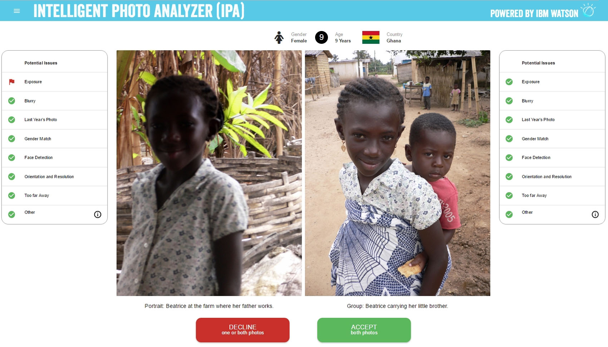
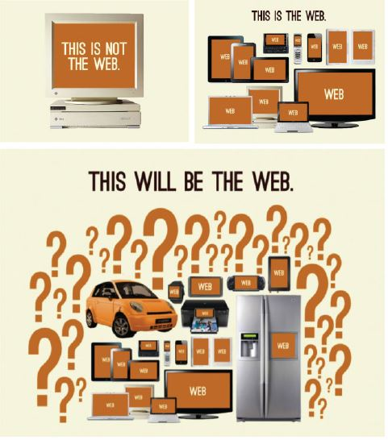

Who are we?
Katrine Orlova
Front-End Dev, Jan 2015

Anders Langseth
Front-End Dev, Aug 2015


Working in teams

- UX-Designer
- Back-End
- Tester
- Business
- Ops

Front-End Developers Develop For...
The Web

Front-End Dev Skills

Becoming a Front-End Developer